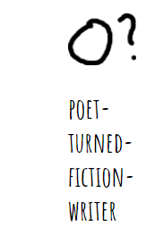

I started out the project getting the basic drawing to work, and the version that the game defaults to on refresh. Once that was working (and extended graphics weren't) I moved to make sure that all of the various screens worked and could be accessed at the right time and location. This is the version that was played at the time of the feedback party, as the other aspects I had tried to implement weren't working. The first to be solved was the issue of extended graphics,(I wanted players to have a triangle and a star avaliable in their brush set) and that turned out to just be an issue of not having all of the needed libraries. By adding the extra graphics library everything was fixed!
The next issue was something not strictly necessary but something that I really wanted to implement, a little gallery of the previously drawn images. This was an absolute pain and the solution is really silly. While it was able to collect something, the images would either turn out blank or entirely black. Fun fact, one of the main contributors to the pixijs repo on github is constantly answering questions about exactly this aspect, and shockingly enough, none of them having the same issue as I did. Eventually, I did get the correct combination of tutorials and fixes to get the extraction of an image for the div to work! I honestly think this is really cool and has required the most reworking of anything in the project, so if you notice anything, notice how cool that is. As the gallery populates, once it has three pictures shown, it will get rid of the oldest and replace it with the newest drawing. In the "mobile" version (what I'm calling the straight down version) the label on the gallery is removed as I found it cluttered the space at that point. I really love the idea of it being a little refridgerator for your drawings to be pinned up on, and (at least to me) it's a lot more funny to see your drawing paired with what it's supposed to be.
The last two major issues were with A) the spritesheet and B) getting the words to draw. The spritesheet was a similar to extract in that there were tutorials I followed that didn't work (since I was using a json, I shouldn't need to parse it, PIXI is supposed to just do it), and since we didn't do it in Circle Blast (a png was used in Circle Blast) it was just going to be a lot of testing things. Luckily (and annoyingly), the issue was actually very simple and for whatever reason not presented in any current PIXI js tutorials. Naming the spritesheet during import fixed it. Getting the nouns to draw isn't pretty.
I used an API to generate a random noun to be drawn. Over the course of this project and testing it thoroughly, I have found that this is quite a liberal API with what it decides a noun is. The real in-your-face example was when I was given the following:

As of right now, the other noun API's are similarly set up, with there being a lot of nouns that just aren't great for drawing, like "Quadra", "Leptocephalus", and "Intent", some that just aren't nouns, and some that certainly don't count as one word. I know the API isn't complete, but I'd rather have one with a bit more customization. So though they're fine for now (the alternative being reading in a file to an array and randomly picking a line, which would require me to find or write an appropriately long list of nouns), I don't want this to be the final version of what this program uses to pull its nouns from.
I used PIXI as my tech stack, and based on the people I've tested it own, my website seems fairly intuitive. I don't know how "useful" is being measured but my site is entirely functional and does everything that I said it would in my instructions, and in my proposal. Those who skip the instructions get the gist quickly, with the timer and with how their actions give visual and auditory feedback. My program is nothing at all like any of the programs we've created in class, excepting in that it has multiple screens and text-based buttons like Circle Blast, so I would definitley say it goes beyond what we've similarly done in class.
I used a simple and warm color scheme and design for the backing elements, focusing on getting a few basic background colors down to ensure that the page looks nice no matter what you draw. Though I didn't end up figuring out a way to speed up the music towards the end of the 60 seconds, the visual countdown serves that purpose for now. I didn't implement a ton of responsiveness, simply switching to a vertical layout at a small enough size.
All of my images are jpgs or pngs, and the only jpgs are for the proposal page. I have an upbeat but quiet backtrack, a countdown sound, and a small clicking sound each time you change a button option.
I have four classes, each creates a different type of shape when called of the passed in color, location, and size. As far as I can tell I've followed the code conventions, the only place I couldn't was in creating the various labels and buttons, since though they call the same things, they require different values.
On starting the game the player is presented with a prompt, the player then has 60 seconds to draw their best version of the prompt possible.
A casual drawing game.
A universal game, meant to be played here and there to practice your drawing skills.
There is no story in this game, it's abstract. The motivation comes purely through the assumed audience's enjoyment of their drawings, and that it's an easy game to play with friends or alone.
The graphic style would be simple, similar to MS paint, Drawful, or T-KO, the focus is more on character creation. A simple palette (literal not as in color scheme) and a series of line-widths to indicate how wide the brush is should suffice. The actual canvas can be bordered by a cute cartoon-y looking frame to indicate where the canvas is. (I'm not using Canvas 2D I'll be using "Circle Blast!" as my basis)
Sound will be simple, with a song that increases in intensity as you approach the time limit, similar to the background noise of Quiplash. Sound will be largely the background noise with a small, inobtrusive noise to indicate a change in selection to provide auditory feedback to the user.
The player is able to choose colors and the size of the brushes when interacting with the game, along with what they actually draw (I'm not the drawing police just because there's a prompt doesn't mean you need to follow it).
The player will be able to use the mouse or touching the screen to interact with the game.
There will be a countdown screen where you are told you have 60 seconds to draw the prompt, after this point the player is allowed to interact with the onscreen items. This allows the player to familiarize themselves with the product before continuing. The brush defaults to black and mid-size.
There is nothing to learn in this game beyond honing your drawing skills. There is no assesment of skill and thus no way to win other than a way created in the mind of the player (improvement of skill, accuracy etc...).


Lilian Ready
2nd year at RIT
Majoring in Game Design and Development and Computer Science
I'm certified in Adobe Illustrator, and have been programming for around four years. I've been a private tutor for Unity and C# and have been learning C++ and am currently very interested in WebDev.